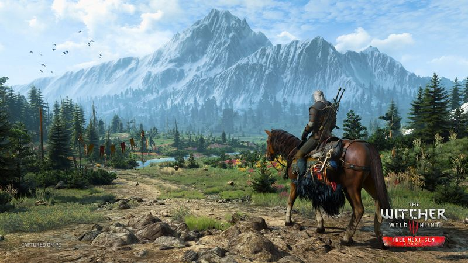
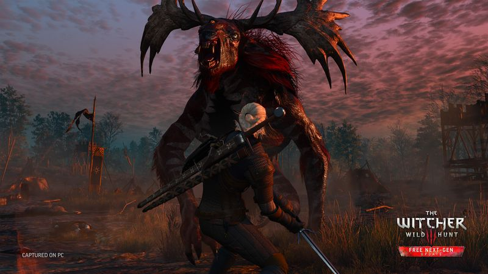

The thirty-second version
Yes, it's the best RPG. Yes, still.
Gwent stole more of my life than any of my children.
The Witcher 3 is the game we point to when someone asks whether the medium can do serious storytelling. It's also the game we accidentally spent forty hours playing card mini-games in. Both things being true is why it's still, ten years later, the RPG the rest are measured against. Play it. Take breaks. Don't feel bad about skipping to Skellige.
Okay, what is this thing?
You're standing in a swamp holding a sword bigger than your torso, watching a griffin eat a horse, and the game politely suggests that maybe you should also finish the herbalist's contract, do a witcher hunt, meet an emperor whose name you'll forget, and possibly bathe. Geralt is having a normal one. So are we, three hours past bedtime, still saying 'one more contract'.
The world does the heavy lifting. Every question mark on the map is at least a story, and every side quest was written by someone who wanted you to remember it. Combat is chunky and satisfying rather than technical, alchemy is optional in a way that suits a busy dad, and the choices land because the writing carries them. Also, Gwent. We are not talking about Gwent.


Why it escaped the group chat
- The base game runs somewhere between forty and sixty hours if you're focused and roughly a hundred and change if you're a witcher tourist.
- It ships with two large expansions, Hearts of Stone and Blood and Wine, that are basically full RPGs on their own.
- Gwent is entirely optional and half of us couldn't stop playing it anyway.
Three dads enter
01
Dad Who Skipped the Tutorial
Roll toward the monster, roll away, roll into a tree.
I got to Velen, picked one sword, refused to swap to silver even when the game begged me, and just rolled at everything until it stopped moving. It worked more often than it should have. I'm still not sure what a Quen is and I don't want to be told. I finished the game with the Igni button unused.
02
The Descent Guy
There is a build. I found the build. I explained it at length.
Sign build, mostly Igni, alchemy tree for the crit multiplier. I rerolled at level twelve to fix my character sheet and I haven't shut up about the Euphoria mutation since. The Witcher 3 is one of the rare places my tuning-fork brain and my story brain agree, and I'm told that's insufferable. Correct, but insufferable. Ask me about tears of the goddess sometime.
03
Normal-ish Dad
It doesn't respect your evening. That's the price.
The world is enormous and the sidequests are actually good, which is a nightmare when your gaming window ends at 10:45. I finished it over ten months on PC, one contract at a time, and I still haven't started Blood and Wine because my kid takes swimming lessons on Saturdays. I say I'll get to it. I won't. Yet.
Who it is for and what to watch
Invite these people
- People who missed The Witcher 3 the first time and would like to be smug about it now
- Fans of world-building where every peasant has a name
- Anyone with a hundred hours to bury
Dad caveats
- The first four hours in White Orchard are the slowest part of the game
- Gwent is a cognitohazard, treat it like a slot machine
- You will start a Blood and Wine playthrough and forget the main plot
Receipts
Two of us cleared the main game and Blood and Wine on PC; the third quit at Skellige for a year and came back to finish it out of stubbornness.